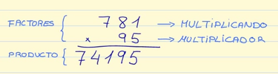

MATHKIDS es una pagina web la cual se dedica a hacer que los niños tengan mejor aprendizaje en matematicas en la cual podremos ver las siguientes operaciones basicas:
La matemática es una ciencia formal que, partiendo de axiomas y siguiendo el razonamiento lógico, estudia las propiedades, estructuras abstractas y relaciones entre entidades abstractas como números, figuras geométricas, iconos, glifos o símbolos en general.
Suma
¿Que son las sumas?
Llamamos suma a la acción de añadir, juntar o agregar elementos, cuando realizamos esta acción estamos uniendo cantidades o conjuntos y para ello siempre debe haber un mínimo de dos elementos.
¿Como hacer sumas?
Existen 3 pasos para hacer una suma
Colocar los sumandos uno debajo del otro, de manera que coincidan las unidades en la misma columna.
Sumar cada columna por separado empezando por las unidades.
El resultado de la suma se escribe debajo de cada columna y de la línea de resultado.
Ejemplo
Video de como sumar:
Resta
¿Que son las restas?
La resta, también conocida como sustracción, es una operación que consiste en sacar, recortar, empequeñecer, reducir o separar algo de un todo. Restar es una de las operaciones esenciales de la matemática y se considera como la más simple junto a la suma, que es el proceso inverso.
¿Como hacer restas?
Aqui te dejamos los pasos para hacer una resta
Coloca el sustraendo (lo que va a restar) debajo del minuendo (la cantidad de la que partimos) , de forma que coincidan las unidades en la misma columna.
Coloca el minuendo representado con material separado por columnas. Deja un hueco debajo para el sustraendo.
Extrae del material las unidades que indica el sustraendo, represéntalo en la resta.
Extrae del material las decenas, representándolo también en la operación.
Ejemplo
Video de como restar:
Multiplicaciòn
¿Que es la multiplicaciòn?
La multiplicación es una operación binaria y derivada de la suma que se establece en un conjunto numérico. En aritmética, es una de las cuatro operaciones elementales, junto con la suma, la resta y la división, y es la operación inversa de esta última.
¿Como hacer multiplicaciones?

Factores
Son los números que multiplicas dentro de la multiplicación. Dentro de los factores encontramos:
Multiplicando: es el número que colocamos en la parte posterior de la multiplicación.
Multiplicador: es el número que colocamos debajo del multiplicando.
Producto
Es el resultado de tu multiplicación y se sitúa en la parte inferior de la multiplicación.
Ahora sí que si, empecemos con los pasos para hacer una multiplicación.
El primer paso, Multiplicamos las unidades del multiplicador por las cifras del multiplicando. El resultado de esta multiplicación lo ponemos en la fila de abajo. Tienes que ir número por número, y recuerda, siempre en orden de derecha a izquierda.
Primero multiplicamos 5 x 1, el resultado de esta multiplicación es 5. Lo ponemos justo debajo de las Unidades.
Después multiplicamos 5 x 8, el resultado de esta multiplicación es 40, ponemos el cero debajo de las decenas y recordamos que nos llevamos 4 para la siguiente multiplicación.
Por último multiplicamos 5 x 7, el resultado de esta multiplicación es 35, pero recuerda que te llevabas 4 de la anterior multiplicación, por lo que el resultado final es 35 + 4 = 39, lo colocamos debajo de las centenas.
El segundo paso es multiplicar las decenas del multiplicador por las cifras del multiplicando. El resultado de esta multiplicación lo ponemos en la fila de abajo, pero desplazado una posición a la izquierda. Aquí también tienes que ir número por número y siempre realizamos la multiplicación de derecha a izquierda:
Movemos a la izquierda la primera posición, por lo tanto en la primera posición no escribas nada. Ahora multiplicamos en orden las decenas por cada uno de los números del multiplicando: 9 x 1, el resultado de esta multiplicación es 9 y lo escribimos debajo del cero.
Ahora multiplicamos 9 x 8, el resultado de esta multiplicación es 72, escribimos el 2 debajo del 9 y nos llevamos 7.
Por último, para terminar esta parte de la multiplicación, multiplicamos 9 x 7, el resultado de esta multiplicación es 63, pero recuerda que te llevabas 7 de la multiplicación anterior, por lo que el resultado es 63 + 7 = 70. Lo colocamos debajo del 3.
El último paso para terminar tu multiplicación es la suma. Ahora tenemos que sumar los productos que nos han dado en la multiplicación.
Video de como Multiplicar:
Divisiòn
¿Que es la division?
La división es una de las operaciones básicas de la aritmética que consiste en separar en partes iguales un total. En matemáticas, el símbolo de la división es el signo (÷), dos puntos (:) o barra oblicua (/)
¿Como dividir?
Para hacer divisiones hay que seguir los siguientes pasos:
Tomar tantas cifras del dividendo como cifras tenga el divisor. Si las cifras del dividendo son más pequeñas que el divisor, hay que añadir otra cifra más en el dividendo.
Por ejemplo, si queremos dividir 5738 / 73, lo primero que tenemos que hacer es tomar dos cifras del dividendo, 57, pero como 57 es menor que 73, hay que coger otra cifra más del dividendo, es decir, 573.
Dividir el primer número del dividendo (o los dos primeros si hemos tenido que añadir otra cifra) entre el primer número del divisor y comprobar si cabe. Si no cabe, comprobar con el número anterior.
Si seguimos con el ejemplo anterior, tendríamos que dividir 57 entre 7. Como 8 x 7 = 56, probaremos con 8. Multiplicamos 73 x 8 = 584 y como 584 es mayor que 573, el 8 no cabe, por lo que tendríamos que probar con el número anterior.
73 x 7 = 511 y como 511 es más pequeño que 573, el 7 si cabe y podríamos hacer la resta de 573 – 511 = 62.
Bajar la cifra siguiente y dividir como en el paso anterior hasta que no haya más cifras.
Seguimos con nuestro ejemplo de división por dos cifras. El siguiente número que tendríamos que bajar es el 8, por lo que ahora tendríamos que dividir 628 entre 73.
Tomamos otra vez las dos primeras cifras 62 y tendríamos que dividirlas entre 7. Como 8 x 7 = 56, escribimos 8 en el cociente y multiplicamos 73 x 8 = 584. Como 584 es más pequeño que 628, procedemos a hacer la resta 628 – 584 = 44. Ya no hay más números que bajar, ¡hemos terminado la división! El resultado es 78 y el resto es 44.
Video de como dividir:
Ejercicios
Esperamos que hayas comprendido cada una de las operaciones basicas que existen en la matematica, acontinuacion algunos ejercicos para que los puedas realizar en tu casa, ¡RECUERDA NO HACER TRAMPA CON CALCULADORAS O EL INTERNET!
AQUI